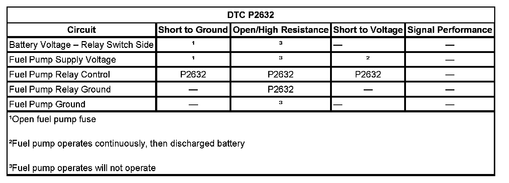

P0230
DTC P0230 or P2632 (W/O FSCM)
DTC DESCRIPTORS
DTC P0230
Fuel Pump Relay Control Circuit
DTC P2632
Fuel Pump Relay 2 Control Circuit
DIAGNOSTIC FAULT INFORMATION
DTC P0230:
DTC P2632:

Perform the Diagnostic System Check - Vehicle prior to using this diagnostic procedure. Initial Inspection and Diagnostic Overview
CIRCUIT/SYSTEM DESCRIPTION
The control module enables the fuel pump relay when the ignition switch is turned ON. The control module will disable the fuel pump relay within 2 seconds unless the control module detects ignition reference pulses. The control module continues to enable the fuel pump relay as long as ignition reference pulses are detected. The control module disables the fuel pump relay within 2 seconds if ignition reference pulses cease to be detected and the ignition remains ON.
The control module monitors the voltage on the fuel pump relay control circuit. If the control module detects an incorrect voltage on the fuel pump relay control circuit, a fuel pump relay control DTC sets.
CONDITIONS FOR RUNNING THE DTC
- The ignition voltage is between 9-18 volts.
- DTC P0230 runs continuously when the above conditions are met.
- DTC P2632 runs continuously when the above conditions are met.
CONDITIONS FOR SETTING THE DTC
- The control module detects that the commanded state of the driver and the actual state of the control circuit do not match.
- The above condition is met for a minimum of 2.5 seconds.
ACTION TAKEN WHEN THE DTC SETS
DTCs P0230 and P2632 are Type B DTCs.
CONDITIONS FOR CLEARING THE MIL/DTC
DTCs P0230 and P2632 are Type B DTCs.
CIRCUIT/SYSTEM VERIFICATION
With the ignition ON, engine OFF, command the fuel pump relay ON and OFF several times using the scan tool output control function. You should either hear or feel the relay click with each command.
CIRCUIT/SYSTEM TESTING
1. With the ignition OFF, remove the affected fuel pump relay.
2. With the ignition ON, engine OFF, probe the control circuit of the fuel pump relay with a test lamp that is connected to a good ground. Command the fuel pump relay ON and OFF with a scan tool. The test lamp should turn ON and OFF with each command.
- If the test lamp does not turn ON and OFF, test for an open, high resistance, or a short to ground in the fuel pump relay control circuit, an intermittent or a poor connection at the engine control module (ECM). If the circuit tests normal, replace the control module.
3. Connect a test lamp between the control circuit of the fuel pump relay and the ground circuit of the fuel pump relay. Command the fuel pump relay ON and OFF with a scan tool.
- If the test lamp does not turn ON and OFF, repair the open or the high resistance in the ground circuit of the fuel pump relay.
- If the test lamp does turn ON and OFF, test for an intermittent and for a poor connection at the fuel pump relay, or a faulty fuel pump relay.
REPAIR INSTRUCTIONS
Perform the Diagnostic Repair Verification after completing the diagnostic procedure.
- Control Module References for ECM replacement, setup, and programming
- Relay Replacement (Attached to Wire Harness) Relay Replacement (Within an Electrical Center). Verification Tests